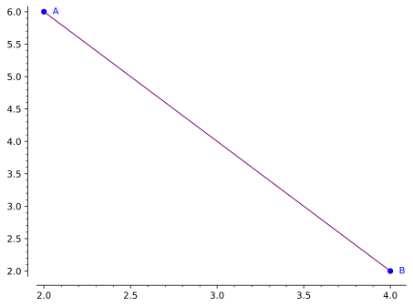
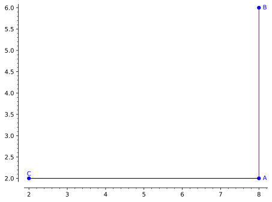

Given two points, determine the distance between them and the midpoint of the line segment connecting them.
Subsection1.3.1Activities
Activity1.3.1.
The points \(A \) and \(B \) are shown in the graph below. Use the graph to answer the following questions:

Figure1.3.2.
(a)
Draw a right triangle so that the hypotenuse is the line segment between points \(A\) and \(B \text{.}\) Label the third point of the triangle \(C\text{.}\)
(b)
Find the lengths of line segments \(AC \) and \(BC \text{.}\)
(c)
Now that you know the lengths of \(AC \) and \(BC \text{,}\) how can you find the length of \(AB \text{?}\) Find the length of \(AB\text{.}\)
Remark1.3.3.
Using the Pythagorean Theorem\((a^2+b^2=c^2)\) can be helpful in finding the distance of a line segment (as long as you create a right triangle!).
Activity1.3.4.
Suppose you are given two points \((x_{1},y_{1})\) and \((x_{2},y_{2})\text{.}\) Let’s investigate how to find the length of the line segment that connects these two points!
(a)
Draw a sketch of a right triangle so that the hypotenuse is the line segment between the two points.
(b)
Find the lengths of the legs of the right triangle in terms of \(x\) and \(y\text{.}\)
(c)
Find the length of the line segment that connects the two original points in terms of \(x\) and \(y\text{.}\)
Definition1.3.5.
The distance, \(d\text{,}\) between two points, \((x_{1},y_{1})\) and \((x_{2}, y_{2})\text{,}\) can be found by using the distance formula:
Notice that the distance formula is an application of the Pythagorean Theorem!
Activity1.3.6.
Apply the Definition 1.3.5 to calculate the distance between the given points.
(a)
What is the distance between \((4,6)\) and \((9,15)\text{?}\)
\(\displaystyle 10.2\)
\(\displaystyle 10.3\)
\(\displaystyle \sqrt{106}\)
\(\displaystyle \sqrt{56}\)
(b)
What is the distance between \((-2,5)\) and \((-7,-1)\text{?}\)
\(\displaystyle \sqrt{11}\)
\(\displaystyle 7.8\)
\(\displaystyle 3.3\)
\(\displaystyle \sqrt{61}\)
(c)
Suppose the line segment \(AB\) has one endpoint, \(A\text{,}\) at the origin. For which coordinate of \(B\) would make the line segment \(AB\) the longest?
\(\displaystyle (3,7)\)
\(\displaystyle (2,-8)\)
\(\displaystyle (-6,4)\)
\(\displaystyle (-5,-5)\)
Remark1.3.7.
Notice in Activity 1.3.6, you can give a distance in either exact form (leaving it with a square root) or as an approximation (as a decimal). Make sure you can give either form as sometimes one form is better than another!
Remark1.3.8.
A midpoint refers to the point that is located in the middle of a line segment. In other words, the midpoint is the point that is halfway between the two endpoints of a given line segment.
Activity1.3.9.
Two line segments are shown in the graph below. Use the graph to answer the following questions:

Figure1.3.10.
(a)
What is the midpoint of the line segment \(AB\text{?}\)
\(\displaystyle (16,4)\)
\(\displaystyle (8,4)\)
\(\displaystyle (8,8)\)
\(\displaystyle (10,2)\)
(b)
What is the midpoint of the line segment \(AC\text{?}\)
\(\displaystyle (6,0)\)
\(\displaystyle (4,4)\)
\(\displaystyle (6,4)\)
\(\displaystyle (5,2)\)
(c)
Suppose we connect the two endpoints of the two line segments together, to create the new line segment, \(BC\text{.}\) Can you make an educated guess to where the midpoint of \(BC\) is?
\(\displaystyle (10,8)\)
\(\displaystyle (6,4)\)
\(\displaystyle (5,4)\)
\(\displaystyle (5,2)\)
(d)
How can you test your conjecture? Is there a mathematical way to find the midpoint of any line segment?
Definition1.3.11.
The midpoint of a line segment with endpoints \((x_{1},y_{1})\) and \((x_{2}, y_{2})\text{,}\) can be found by taking the average of the \(x\) and \(y\) values. Mathematically, the midpoint formula states that the midpoint of a line segment can be found by:
Apply the Definition 1.3.11 to calculate the midpoint of the following line segments.
(a)
What is the midpoint of the line segment with endpoints \((-4,5)\) and \((-2,-3)\text{?}\)
\(\displaystyle (3,1)\)
\(\displaystyle (-3,1)\)
\(\displaystyle (1,1)\)
\(\displaystyle (1,4)\)
(b)
What is the midpoint of the line segment with endpoints \((2,6)\) and \((-6,-8)\text{?}\)
\(\displaystyle (-3,-1)\)
\(\displaystyle (-2,0)\)
\(\displaystyle (-2,-1)\)
\(\displaystyle (4,7)\)
(c)
Suppose \(C\) is the midpoint of \(AB\) and is located at \((9,8)\text{.}\) The coordinates of \(A\) are \((10,10)\text{.}\) What are the coordinates of \(B\text{?}\)
\(\displaystyle (9.5,9)\)
\(\displaystyle (11,12)\)
\(\displaystyle (18,16)\)
\(\displaystyle (8,6)\)
Activity1.3.13.
On a map, your friend Sarah’s house is located at \((-2, 5)\) and your other friend Austin’s house is at \((6,-2)\text{.}\)
(a)
How long is the direct path from Sarah’s house to Austin’s house?
(b)
Suppose your other friend, Micah, lives in the middle between Sarah and Austin. What is the location of Micah’s house on the map?
Subsection1.3.2Videos
It would be great to include videos down here, like in the Calculus book!